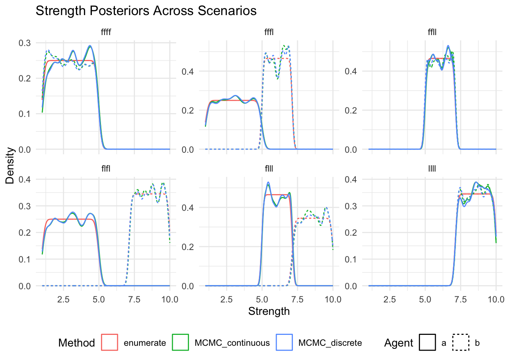
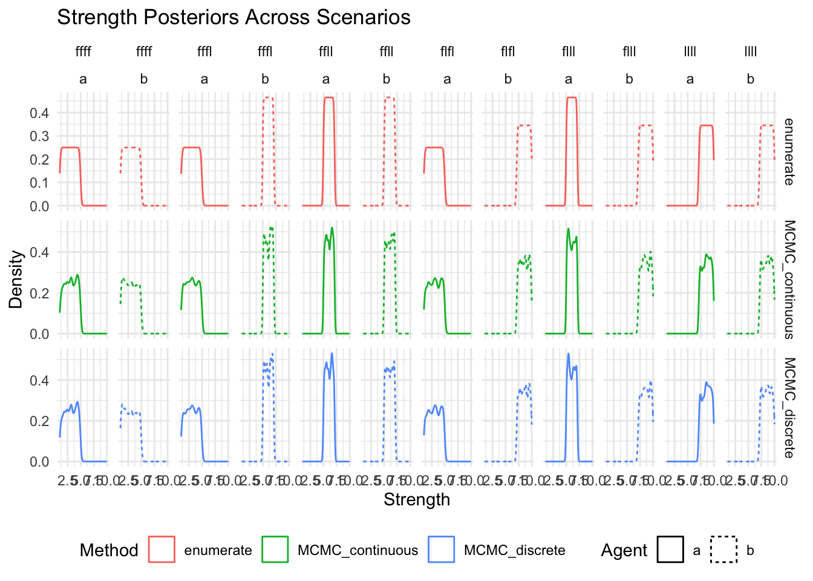
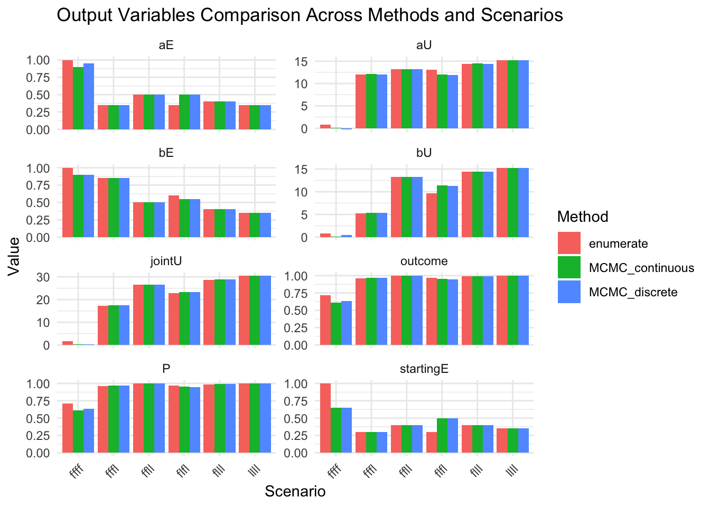
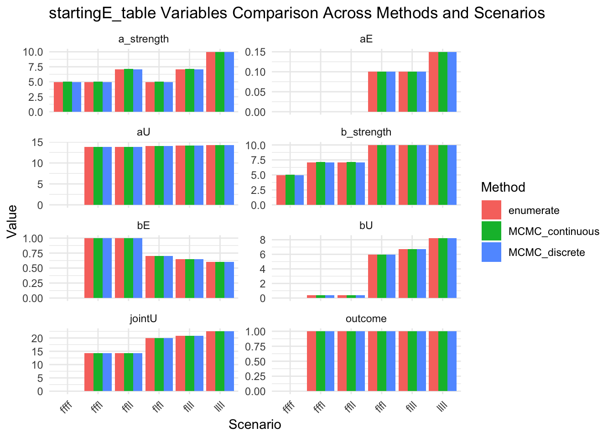

library(tidyverse)
library(rwebppl)
joint <- data.frame(model = 'joint',
agent = rep(c('A','B'), 18),
scenario = c(rep('F,F;F,F',6),rep('F,F;F,L',6),rep('F,L;F,L',6),rep('F,F;L,L',6),rep('F,L;L,L',6),rep('L,L;L,L',6)),
effort = 0, strength = 0,
outcome = 0, prob = 0, round = rep(c(1,1,2,2,3,3), 6),
reward = rep(c(10,10,20,20,20,20), 6))
joint$prob[joint$round==1] = NaN
joint$outcome = c(integer(6), integer(3),1,integer(2), 0,1,0,1,1,1, integer(2),integer(4)+1, 0,integer(5)+1, integer(6)+1)code adapted from https://github.com/jczimm/competence_effort/blob/main/Code/main_text/exp1_simulation.R
NOTE 10/20/25: next time I run the cached cells, I’ll need to remove the “webppl vs memo/” directory prefix, and add a code block that sets the working directory appropriately for interactive execution
1 - mcmc
effort_space_joint <- "var efforts = [0,0.05,0.1,0.15,0.2,0.25,0.3,0.35,0.4,0.45,0.5,0.55,0.6,0.65,0.7,0.75,0.8,0.85,0.9,0.95,1]" # footnote: For computational tractability, we constrained the effort space to discrete values, ranging from 0 to 1 with increments of 0.05.
## R3 Probability
mdl1 <- "
var argMax = function(f, ar){
return maxWith(f, ar)[0]
};
var alpha = 13.5, beta = 24.5
var weight = mem(function (box) {return 5})
var lowR = 10
var highR = 20
var lift = function(strength,box,effort){
return (effort*strength >= weight(box))
}
var optE = function(strength,box,reward) {
return argMax(
function(effort) {
if (strength.length > 1)
{return reward*listMean(map(function(i){return lift(i,box,effort)}, strength)) - alpha*effort}
else
{return reward*lift(strength,box,effort) - alpha*effort}
},
efforts);
};
var outcome = function(strength,box,reward) {
if (strength.length > 1)
{ var opt_effort = optE(strength,box,reward)
return listMean(map(function(i){return lift(i,box,opt_effort)}, strength))}
else
{return lift(strength,box,optE(strength,box,reward))}
}
var x2a = [], x2b = []
var samples2 = Infer({ method: 'MCMC', kernel: 'MH', samples: 10000, burn: 1000, model() {
var sa = uniform(1,10)
var sb = uniform(1,10)
condition(outcome(sa,'box',lowR) == "
mdl2 <- ")
condition(outcome(sb,'box',lowR) == "
mdl3 <- ")
condition(outcome(sa,'box',highR) == "
mdl4 <- ")
condition(outcome(sb,'box',highR) == "
mdl5 <- ")
x2a.push(sa)
x2b.push(sb)
return 0
}})
var jointUtility = function(init_effort,a_strength,b_strength){
var r3_reward = highR // round 3 reward
var lift2 = function(strength,strength2,box,effort,effort2){
return (effort*strength + effort2*strength2) >= weight(box)
}
var gini = function(effort, effort2) {return (effort == effort2 ? 0 : Math.abs(effort-effort2)/4/(effort+effort2))}
// For the Maximum effort model, the Gini coefficient is always 0, so it is fine to keep this term in here for the maximum effort model.
var a = function(depth,reward) {
var effort2 = b(depth - 1,reward)
var optEffort = function(strength,strength2,box,reward) {
return argMax(
function(effort) {
if (a_strength.length > 1) {
return reward*listMean(map2(function(i,j){return lift2(i,j,box,effort,effort2)}, strength,strength2)) - alpha*effort - beta*gini(effort,effort2)
} else {
return reward*lift2(strength,strength2,box,effort,effort2) - alpha*effort - beta*gini(effort,effort2)
}
},
efforts);
};
return optEffort(a_strength,b_strength,'box',reward)
}
var b = function(depth,reward) {
var effort2 = depth===0 ? init_effort : a(depth,reward)
var optEffort = function(strength,strength2,box,reward) {
return argMax(
function(effort) {
if (a_strength.length > 1) {
return reward*listMean(map2(function(i,j){return lift2(i,j,box,effort,effort2)}, strength,strength2)) - alpha*effort - beta*gini(effort,effort2)
} else {
return reward*lift2(strength,strength2,box,effort,effort2) - alpha*effort - beta*gini(effort,effort2)
}
},
efforts);
};
return optEffort(b_strength,a_strength,'box',reward)
}
var findDepth = function(x) { // find the depth that is needed to converge
if (Math.abs(b(x,r3_reward) - b(x+1,r3_reward)) < 0.06) {
return x;
} else {
return -1;
}
};
var ds = [1,2,5,10]; // if converges in 1 round, then depth = 1; if not, then try 2, 5, 10.
var d = function() {
if (findDepth(ds[0]) > 0) {
return ds[0]
} else if (findDepth(ds[1]) > 0) {
return ds[1]
} else if (findDepth(ds[2]) > 0) {
return ds[2]
} else if (findDepth(ds[3]) > 0) {
return ds[3]
} else {
display('Effort could not converge in ' + ds[3] + ' iterations. Increase the number of iterations and try again.')
}
};
var depth = d()
var aE = a(depth+1,r3_reward)
var bE = b(depth,r3_reward)
var outcome2 = function(a_strength,b_strength,box) {
if (a_strength.length > 1) {
return listMean(map2(function(i,j){return lift2(i,j,box,aE,bE)}, a_strength,b_strength))
} else {
return lift2(a_strength,b_strength,box,aE,bE)
}
}
// calculate agents' utility
if (a_strength.length > 1) {
var aU = r3_reward*listMean(map2(function(i,j){return lift2(i,j,'box',aE,bE)}, a_strength,b_strength)) - alpha*aE - beta*gini(aE,bE)
var bU = r3_reward*listMean(map2(function(i,j){return lift2(i,j,'box',bE,aE)}, b_strength,a_strength)) - alpha*bE - beta*gini(bE,aE)
var table = { aU: aU, bU: bU, aE: aE, bE: bE, jointU: aU+bU, outcome: outcome2(a_strength,b_strength,'box'), a_strength: a_strength, b_strength: b_strength};
return table
} else {
var aU = r3_reward*lift2(a_strength,b_strength,'box',aE,bE) - alpha*aE - beta*gini(aE,bE)
var bU = r3_reward*lift2(b_strength,a_strength,'box',bE,aE) - alpha*bE - beta*gini(bE,aE)
var table = { aU: aU, bU: bU, aE: aE, bE: bE, jointU: aU+bU, outcome: outcome2(a_strength,b_strength,'box'), a_strength: a_strength, b_strength: b_strength};
return table
}
}
// find the intial effort that maximizes the joint utility
var startingEffort = function(a_strength,b_strength) {
return argMax(
function(init_effort) {
var tbl = jointUtility(init_effort,a_strength,b_strength)
// display(tbl.jointU)
return tbl.jointU
},
efforts);
};
var startingE = startingEffort(x2a,x2b)
var output = {P: jointUtility(startingE,x2a,x2b).outcome}
output
"
# F,F;F,F
# mdl <- paste0(effort_space_joint, mdl1, "false", mdl2, "false", mdl3, "false", mdl4, "false", mdl5)
# a <- rwebppl::webppl(mdl)
# joint$prob[joint$round==3 & joint$scenario=='F,F;F,F'] <- a$P*100
# jointoriginal_ffff <- paste0(effort_space_joint, mdl1, "false", mdl2, "false", mdl3, "false", mdl4, "false", mdl5) |> rwebppl::webppl()
original_fffl <- paste0(effort_space_joint, mdl1, "false", mdl2, "false", mdl3, "false", mdl4, "true", mdl5) |> rwebppl::webppl()
original_flfl <- paste0(effort_space_joint, mdl1, "false", mdl2, "true", mdl3, "false", mdl4, "true", mdl5) |> rwebppl::webppl()
original_ffll <- paste0(effort_space_joint, mdl1, "false", mdl2, "false", mdl3, "true", mdl4, "true", mdl5) |> rwebppl::webppl()
original_flll <- paste0(effort_space_joint, mdl1, "false", mdl2, "true", mdl3, "true", mdl4, "true", mdl5) |> rwebppl::webppl()
original_llll <- paste0(effort_space_joint, mdl1, "true", mdl2, "true", mdl3, "true", mdl4, "true", mdl5) |> rwebppl::webppl()# plot
bind_rows(
tibble(scenario='F,F;F,F', P=original_ffff$P),
tibble(scenario='F,F;F,L', P=original_fffl$P),
tibble(scenario='F,L;F,L', P=original_flfl$P),
tibble(scenario='F,F;L,L', P=original_ffll$P),
tibble(scenario='F,L;L,L', P=original_flll$P),
tibble(scenario='L,L;L,L', P=original_llll$P)
) |>
ggplot(aes(x=scenario, y=P*100)) +
geom_col() +
labs(title='Round 3 Success Probability by Scenario (MCMC, ORIGINAL CODE)', y='Probability (%)', x='Scenario') +
theme_minimal()2 - enumeration
now trying it using enumeration (using a discretized strength space), as a step towards translating into memo:
effort_space_joint <- "var efforts = [0,0.05,0.1,0.15,0.2,0.25,0.3,0.35,0.4,0.45,0.5,0.55,0.6,0.65,0.7,0.75,0.8,0.85,0.9,0.95,1]"
## R3 Probability
mdl1 <- "
// convert to a @jax.jit?
var argMax = function(f, ar){
return maxWith(f, ar)[0]
};
var alpha = 13.5, beta = 24.5
var weight = mem(function (box) {return 5})
var lowR = 10
var highR = 20
// convert to a @jax.jit
var lift = function(strength,box,effort){
return (effort*strength >= weight(box))
}
// convert to a @jax.jit
var optE = function(strength,box,reward) {
return argMax(
function(effort) {
if (strength.length > 1)
{return reward*listMean(map(function(i){return lift(i,box,effort)}, strength)) - alpha*effort}
else
{return reward*lift(strength,box,effort) - alpha*effort}
},
efforts);
};
// convert to a @jax.jit
var outcome = function(strength,box,reward) {
if (strength.length > 1)
{ var opt_effort = optE(strength,box,reward)
return listMean(map(function(i){return lift(i,box,opt_effort)}, strength))}
else
{return lift(strength,box,optE(strength,box,reward))}
}
// convert to a @memo, and instead of pushing x2a and x2b to a global variable, bring in the computations which use them into the @memo ?
var x2a = [], x2b = []
var samples2 = Infer({ method: 'enumerate', model() {
var sa = (11+randomInteger(89))/10 // not in a general form, but computes values in (1, 10) instead of in [1, 10] to see if that fixes things
var sb = (11+randomInteger(89))/10
condition(outcome(sa,'box',lowR) == "
mdl2 <- ")
condition(outcome(sb,'box',lowR) == "
mdl3 <- ")
condition(outcome(sa,'box',highR) == "
mdl4 <- ")
condition(outcome(sb,'box',highR) == "
mdl5 <- ")
x2a.push(sa)
x2b.push(sb)
return 0
}})
// convert to a combination of @jax.jit and @memo ? so I'm not doing two-step nested optimization (like the difference between RSA in webppl and in memo)
var jointUtility = function(init_effort,a_strength,b_strength){
var r3_reward = highR // round 3 reward
var lift2 = function(strength,strength2,box,effort,effort2){
return (effort*strength + effort2*strength2) >= weight(box)
}
var gini = function(effort, effort2) {return (effort == effort2 ? 0 : Math.abs(effort-effort2)/4/(effort+effort2))}
// For the Maximum effort model, the Gini coefficient is always 0, so it is fine to keep this term in here for the maximum effort model.
var a = function(depth,reward) {
var effort2 = b(depth - 1,reward)
var optEffort = function(strength,strength2,box,reward) {
return argMax(
function(effort) {
if (a_strength.length > 1) {
return reward*listMean(map2(function(i,j){return lift2(i,j,box,effort,effort2)}, strength,strength2)) - alpha*effort - beta*gini(effort,effort2)
} else {
return reward*lift2(strength,strength2,box,effort,effort2) - alpha*effort - beta*gini(effort,effort2)
}
},
efforts);
};
return optEffort(a_strength,b_strength,'box',reward)
}
var b = function(depth,reward) {
var effort2 = depth===0 ? init_effort : a(depth,reward)
var optEffort = function(strength,strength2,box,reward) {
return argMax(
function(effort) {
if (a_strength.length > 1) {
return reward*listMean(map2(function(i,j){return lift2(i,j,box,effort,effort2)}, strength,strength2)) - alpha*effort - beta*gini(effort,effort2)
} else {
return reward*lift2(strength,strength2,box,effort,effort2) - alpha*effort - beta*gini(effort,effort2)
}
},
efforts);
};
return optEffort(b_strength,a_strength,'box',reward)
}
var findDepth = function(x) { // find the depth that is needed to converge
if (Math.abs(b(x,r3_reward) - b(x+1,r3_reward)) < 0.06) {
return x;
} else {
return -1;
}
};
var ds = [1,2,5,10]; // if converges in 1 round, then depth = 1; if not, then try 2, 5, 10.
var d = function() {
if (findDepth(ds[0]) > 0) {
return ds[0]
} else if (findDepth(ds[1]) > 0) {
return ds[1]
} else if (findDepth(ds[2]) > 0) {
return ds[2]
} else if (findDepth(ds[3]) > 0) {
return ds[3]
} else {
display('Effort could not converge in ' + ds[3] + ' iterations. Increase the number of iterations and try again.')
}
};
var depth = d()
var aE = a(depth+1,r3_reward)
var bE = b(depth,r3_reward)
var outcome2 = function(a_strength,b_strength,box) {
if (a_strength.length > 1) {
return listMean(map2(function(i,j){return lift2(i,j,box,aE,bE)}, a_strength,b_strength))
} else {
return lift2(a_strength,b_strength,box,aE,bE)
}
}
// calculate agents' utility
if (a_strength.length > 1) {
var aU = r3_reward*listMean(map2(function(i,j){return lift2(i,j,'box',aE,bE)}, a_strength,b_strength)) - alpha*aE - beta*gini(aE,bE)
var bU = r3_reward*listMean(map2(function(i,j){return lift2(i,j,'box',bE,aE)}, b_strength,a_strength)) - alpha*bE - beta*gini(bE,aE)
var table = { aU: aU, bU: bU, aE: aE, bE: bE, jointU: aU+bU, outcome: outcome2(a_strength,b_strength,'box'), a_strength: a_strength, b_strength: b_strength};
return table
} else {
var aU = r3_reward*lift2(a_strength,b_strength,'box',aE,bE) - alpha*aE - beta*gini(aE,bE)
var bU = r3_reward*lift2(b_strength,a_strength,'box',bE,aE) - alpha*bE - beta*gini(bE,aE)
var table = { aU: aU, bU: bU, aE: aE, bE: bE, jointU: aU+bU, outcome: outcome2(a_strength,b_strength,'box'), a_strength: a_strength, b_strength: b_strength};
return table
}
}
// convert to a @jax.jit
// find the intial effort that maximizes the joint utility
var startingEffort = function(a_strength,b_strength) {
return argMax(
function(init_effort) {
var tbl = jointUtility(init_effort,a_strength,b_strength)
return tbl.jointU
},
efforts);
};
var startingE = startingEffort(x2a,x2b)
// display(jointUtility(startingE,x2a,x2b))
var output = {P: jointUtility(startingE,x2a,x2b).outcome}
output
"
# F,F;F,F
mdl <- paste0(effort_space_joint, mdl1, "false", mdl2, "false", mdl3, "false", mdl4, "false", mdl5)
webppl(mdl)- note that their model is assuming that 1 and 10 are lower probability, which is just a computational limitation! when enumerating, the resulting p is infinitesimally small but matches all others; when using MCMC, the bounds are underweighted.
- -> using something like (11+randomInteger(89))/10 to simulate sampling from (1,10) rather than [1,10]; inspired by the observation that webppl’s uniform distribution is actually more like this, since there are only finite samples
- maybe just need to exclude 1 from the range and not 10? -> trying different versions of the discretized distribution
- note that their model is assuming that 1 and 10 are lower probability, which is just a computational limitation! when enumerating, the resulting p is infinitesimally small but matches all others; when using MCMC, the bounds are underweighted.
3 - comparison across scenarios
Now moved into xiang2023-exp1-round3-with-debugging.wppl, which has input parameters and logs.
Walking step by step and validate that the values (posteriors and equilibria across all 6 scenarios) match:
library(tidyverse)── Attaching core tidyverse packages ──────────────────────── tidyverse 2.0.0 ──
✔ dplyr 1.1.4 ✔ readr 2.1.5
✔ forcats 1.0.1 ✔ stringr 1.5.2
✔ ggplot2 4.0.0 ✔ tibble 3.3.0
✔ lubridate 1.9.4 ✔ tidyr 1.3.1
✔ purrr 1.1.0
── Conflicts ────────────────────────────────────────── tidyverse_conflicts() ──
✖ dplyr::filter() masks stats::filter()
✖ dplyr::lag() masks stats::lag()
ℹ Use the conflicted package (<http://conflicted.r-lib.org/>) to force all conflicts to become errorsFAIL <- FALSE
LIFT <- TRUE
# Define the 6 scenarios
scenarios <- tribble(
~name, ~a_r1result, ~b_r1result, ~a_r2result, ~b_r2result,
"ffff", FAIL, FAIL, FAIL, FAIL,
"fffl", FAIL, FAIL, FAIL, LIFT,
"flfl", FAIL, LIFT, FAIL, LIFT,
"ffll", FAIL, FAIL, LIFT, LIFT,
"flll", FAIL, LIFT, LIFT, LIFT,
"llll", LIFT, LIFT, LIFT, LIFT
)
# Helper function to run a single scenario
run_scenario <- function(scenario_name, method, discrete = FALSE,
strengthPriorPrecision = NULL,
strengthPriorVersion = NULL) {
scenario <- scenarios %>% filter(name == scenario_name)
params <- data.frame(
method = method,
discrete = discrete,
a_r1result = scenario$a_r1result,
b_r1result = scenario$b_r1result,
a_r2result = scenario$a_r2result,
b_r2result = scenario$b_r2result
)
if (!is.null(strengthPriorPrecision)) {
params$strengthPriorPrecision <- strengthPriorPrecision
}
if (!is.null(strengthPriorVersion)) {
params$strengthPriorVersion <- strengthPriorVersion
}
suppressWarnings(rwebppl::kill_webppl())
if (interactive()) {
message(sprintf("Running %s for scenario %s", method, scenario_name))
}
rwebppl::webppl(
program_file = "webppl vs memo/xiang2023-exp1-round3-with-debugging.wppl",
data = params,
data_var = "params_df",
random_seed = 1
)
}
# Helper function to run all scenarios for a given method configuration
run_all_scenarios <- function(...) {
results <- list()
for (scenario_name in scenarios$name) {
results[[scenario_name]] <- run_scenario(scenario_name, ...)
}
results_tidy <- results |>
enframe() |>
unnest_wider(value) |>
unnest_wider(final_table) |>
rename(scenario = name)
results_tidy
}
compare_results <- function(...) {
# Accepts data frames as inputs
results_list <- list(...)
if (length(results_list) == 0) {
stop("At least one set of results must be provided")
}
# Build summaries
results_combined <- bind_rows(results_list, .id="method")
P_results_summary <- results_combined |> select(method, scenario, P)
posteriors_summary <- results_combined |> select(method, scenario, aStrength_posterior, bStrength_posterior)
message("Now compare visually")
show(P_results_summary)
# Make posteriors_summary longer for plotting (cols: method, agent, scenario, strength)
posteriors_long <- posteriors_summary |>
pivot_longer(cols = c(aStrength_posterior, bStrength_posterior),
names_to = "agent",
values_to = "strength") |>
mutate(agent = ifelse(agent == "aStrength_posterior", "a", "b")) |>
unnest_longer(strength)
# Plot density of posteriors for each scenario
show(
ggplot(posteriors_long, aes(x = strength, color = method, linetype = agent)) +
geom_density() +
facet_wrap(~scenario, scales = "free_y") +
labs(
title = "Strength Posteriors Across Scenarios",
x = "Strength",
y = "Density",
color = "Method",
linetype = "Agent"
) +
theme_minimal() +
theme(legend.position = "bottom")
)
message("Now separately for each method (or method and agent) and so that we can ensure that there are no missing posteriors")
show(
ggplot(posteriors_long, aes(x = strength, color = method, linetype = agent)) +
geom_density() +
facet_grid(method~scenario, scales = "free_y") +
labs(
title = "Strength Posteriors Across Scenarios",
x = "Strength",
y = "Density",
color = "Method",
linetype = "Agent"
) +
theme_minimal() +
theme(legend.position = "bottom")
)
show(
ggplot(posteriors_long, aes(x = strength, color = method, linetype = agent)) +
geom_density() +
facet_grid(method~scenario+agent, scales = "free_y") +
labs(
title = "Strength Posteriors Across Scenarios",
x = "Strength",
y = "Density",
color = "Method",
linetype = "Agent"
) +
theme_minimal() +
theme(legend.position = "bottom")
)
message("Compare all output values across methods")
show(results_combined |> select(-aStrength_posterior, -bStrength_posterior, -startingE_table))
message("Extract all final_table values into a comprehensive summary")
# Plot comparisons for the rest of the variables
results_combined_vars_long <- results_combined |>
select(-where(is.list)) |>
pivot_longer(-c(method, scenario), values_to="value", names_to="variable")
show(
ggplot(results_combined_vars_long, aes(x = scenario, y = value, fill = method)) +
geom_col(position = "dodge") +
facet_wrap(~variable, scales = "free_y", ncol = 2) +
labs(
title = "Output Variables Comparison Across Methods and Scenarios",
x = "Scenario",
y = "Value",
fill = "Method"
) +
theme_minimal() +
theme(axis.text.x = element_text(angle = 45, hjust = 1))
)
message("Look at startingE details")
results_combined_startingE_vars <- results_combined |>
select(method, scenario, startingE, startingE_table) |>
unnest_wider(startingE_table)
show(results_combined_startingE_vars)
results_combined_startingE_vars_long <- results_combined |>
select(method, scenario, startingE_table) |>
unnest_longer(startingE_table, indices_to = "variable", values_to = "value") |>
unnest_longer(value)
show(
ggplot(results_combined_startingE_vars_long, aes(x = scenario, y = value, fill = method)) +
geom_col(position = "dodge") +
facet_wrap(~variable, scales = "free_y", ncol = 2) +
labs(
title = "startingE_table Variables Comparison Across Methods and Scenarios",
x = "Scenario",
y = "Value",
fill = "Method"
) +
theme_minimal() +
theme(axis.text.x = element_text(angle = 45, hjust = 1))
)
}paper results
See paper
strength prior [1,10]
mcmc with continuous prior [1,10] (like paper)
MCMC_continuous_results_all <- run_all_scenarios(
"MCMC", discrete = FALSE
)using webppl version: main v0.9.15-0eb9bf5 /Users/jacobzimmerman/ucsd/fyp/memo-sandbox/.pixi/envs/default/lib/R/library/rwebppl/js/webpplmcmc with discrete prior [1,10]
MCMC_discrete_results_all <- run_all_scenarios(
"MCMC", discrete = TRUE,
strengthPriorPrecision = .05, strengthPriorVersion = "[1,10]"
)using webppl version: main v0.9.15-0eb9bf5 /Users/jacobzimmerman/ucsd/fyp/memo-sandbox/.pixi/envs/default/lib/R/library/rwebppl/js/webpplenumerate with discrete prior [1,10]
enumerate_results_all <- run_all_scenarios(
"enumerate", discrete = TRUE,
strengthPriorPrecision = .05, strengthPriorVersion = "[1,10]"
)summarize
compare_results(
MCMC_continuous = MCMC_continuous_results_all,
MCMC_discrete = MCMC_discrete_results_all,
enumerate = enumerate_results_all
)Now compare visually# A tibble: 18 × 3
method scenario P
<chr> <chr> <dbl>
1 MCMC_continuous ffff 0.612
2 MCMC_continuous fffl 0.969
3 MCMC_continuous flfl 0.953
4 MCMC_continuous ffll 1
5 MCMC_continuous flll 0.993
6 MCMC_continuous llll 1
7 MCMC_discrete ffff 0.637
8 MCMC_discrete fffl 0.968
9 MCMC_discrete flfl 0.949
10 MCMC_discrete ffll 1
11 MCMC_discrete flll 0.991
12 MCMC_discrete llll 1
13 enumerate ffff 0.714
14 enumerate fffl 0.964
15 enumerate flfl 0.970
16 enumerate ffll 1
17 enumerate flll 0.989
18 enumerate llll 1 
Now separately for each method (or method and agent) and so that we can ensure that there are no missing posteriors

Compare all output values across methods# A tibble: 18 × 12
method scenario P aU bU aE bE jointU outcome a_strength
<chr> <chr> <dbl> <dbl> <dbl> <dbl> <dbl> <dbl> <dbl> <list>
1 MCMC_co… ffff 0.612 0.0939 0.0939 0.9 0.9 0.188 0.612 <dbl>
2 MCMC_co… fffl 0.969 12.1 5.36 0.35 0.85 17.5 0.969 <dbl>
3 MCMC_co… flfl 0.953 12.0 11.4 0.5 0.55 23.4 0.953 <dbl>
4 MCMC_co… ffll 1 13.2 13.2 0.5 0.5 26.5 1 <dbl>
5 MCMC_co… flll 0.993 14.5 14.5 0.4 0.4 28.9 0.993 <dbl>
6 MCMC_co… llll 1 15.3 15.3 0.35 0.35 30.6 1 <dbl>
7 MCMC_di… ffff 0.637 -0.244 0.431 0.95 0.9 0.187 0.637 <dbl>
8 MCMC_di… fffl 0.968 12.1 5.33 0.35 0.85 17.4 0.968 <dbl>
9 MCMC_di… flfl 0.949 11.9 11.3 0.5 0.55 23.2 0.949 <dbl>
10 MCMC_di… ffll 1 13.2 13.2 0.5 0.5 26.5 1 <dbl>
11 MCMC_di… flll 0.991 14.4 14.4 0.4 0.4 28.9 0.991 <dbl>
12 MCMC_di… llll 1 15.3 15.3 0.35 0.35 30.6 1 <dbl>
13 enumera… ffff 0.714 0.781 0.781 1 1 1.56 0.714 <dbl>
14 enumera… fffl 0.964 12.0 5.26 0.35 0.85 17.3 0.964 <dbl>
15 enumera… flfl 0.970 13.1 9.68 0.35 0.6 22.7 0.970 <dbl>
16 enumera… ffll 1 13.2 13.2 0.5 0.5 26.5 1 <dbl>
17 enumera… flll 0.989 14.4 14.4 0.4 0.4 28.8 0.989 <dbl>
18 enumera… llll 1 15.3 15.3 0.35 0.35 30.6 1 <dbl>
# ℹ 2 more variables: b_strength <list>, startingE <dbl>Extract all final_table values into a comprehensive summary
Look at startingE details# A tibble: 18 × 11
method scenario startingE aU bU aE bE jointU outcome a_strength
<chr> <chr> <dbl> <dbl> <dbl> <dbl> <dbl> <dbl> <int> <list>
1 MCMC_co… ffff 0.65 0 0 0 0 0 0 <dbl>
2 MCMC_co… fffl 0.3 13.9 0.375 0 1 14.2 1 <dbl>
3 MCMC_co… flfl 0.5 14.1 5.96 0.1 0.7 20.0 1 <dbl>
4 MCMC_co… ffll 0.4 13.9 0.375 0 1 14.2 1 <dbl>
5 MCMC_co… flll 0.4 14.2 6.73 0.1 0.65 20.9 1 <dbl>
6 MCMC_co… llll 0.35 14.3 8.23 0.15 0.6 22.5 1 <dbl>
7 MCMC_di… ffff 0.65 0 0 0 0 0 0 <dbl>
8 MCMC_di… fffl 0.3 13.9 0.375 0 1 14.2 1 <dbl>
9 MCMC_di… flfl 0.5 14.1 5.96 0.1 0.7 20.0 1 <dbl>
10 MCMC_di… ffll 0.4 13.9 0.375 0 1 14.2 1 <dbl>
11 MCMC_di… flll 0.4 14.2 6.73 0.1 0.65 20.9 1 <dbl>
12 MCMC_di… llll 0.35 14.3 8.23 0.15 0.6 22.5 1 <dbl>
13 enumera… ffff 1 0 0 0 0 0 0 <dbl>
14 enumera… fffl 0.3 13.9 0.375 0 1 14.2 1 <dbl>
15 enumera… flfl 0.3 14.1 5.96 0.1 0.7 20.0 1 <dbl>
16 enumera… ffll 0.4 13.9 0.375 0 1 14.2 1 <dbl>
17 enumera… flll 0.4 14.2 6.73 0.1 0.65 20.9 1 <dbl>
18 enumera… llll 0.35 14.3 8.23 0.15 0.6 22.5 1 <dbl>
# ℹ 1 more variable: b_strength <list>
strength prior (1,10)
mcmc with discrete prior (1,10)
MCMC_discrete_results_exclexcl <- run_all_scenarios(
"MCMC", discrete = TRUE,
strengthPriorPrecision = .05, strengthPriorVersion = "(1,10)"
)enumerate with discrete prior (1,10)
enumerate_results_exclexcl <- run_all_scenarios(
"enumerate", discrete = TRUE,
strengthPriorPrecision = .05, strengthPriorVersion = "(1,10)"
)summarize
compare_results(
MCMC_continuous = MCMC_continuous_results_all,
MCMC_discrete = MCMC_discrete_results_exclexcl,
enumerate = enumerate_results_exclexcl
)Now compare visually# A tibble: 18 × 3
method scenario P
<chr> <chr> <dbl>
1 MCMC_continuous ffff 0.612
2 MCMC_continuous fffl 0.969
3 MCMC_continuous flfl 0.953
4 MCMC_continuous ffll 1
5 MCMC_continuous flll 0.993
6 MCMC_continuous llll 1
7 MCMC_discrete ffff 0.733
8 MCMC_discrete fffl 0.969
9 MCMC_discrete flfl 0.950
10 MCMC_discrete ffll 1
11 MCMC_discrete flll 0.990
12 MCMC_discrete llll 1
13 enumerate ffff 0.726
14 enumerate fffl 0.967
15 enumerate flfl 0.972
16 enumerate ffll 1
17 enumerate flll 0.989
18 enumerate llll 1 
Now separately for each method (or method and agent) and so that we can ensure that there are no missing posteriors

Compare all output values across methods# A tibble: 18 × 12
method scenario P aU bU aE bE jointU outcome a_strength
<chr> <chr> <dbl> <dbl> <dbl> <dbl> <dbl> <dbl> <dbl> <list>
1 MCMC_co… ffff 0.612 0.0939 0.0939 0.9 0.9 0.188 0.612 <dbl>
2 MCMC_co… fffl 0.969 12.1 5.36 0.35 0.85 17.5 0.969 <dbl>
3 MCMC_co… flfl 0.953 12.0 11.4 0.5 0.55 23.4 0.953 <dbl>
4 MCMC_co… ffll 1 13.2 13.2 0.5 0.5 26.5 1 <dbl>
5 MCMC_co… flll 0.993 14.5 14.5 0.4 0.4 28.9 0.993 <dbl>
6 MCMC_co… llll 1 15.3 15.3 0.35 0.35 30.6 1 <dbl>
7 MCMC_di… ffff 0.733 1.16 1.16 1 1 2.33 0.733 <dbl>
8 MCMC_di… fffl 0.969 12.1 5.35 0.35 0.85 17.4 0.969 <dbl>
9 MCMC_di… flfl 0.950 12.0 11.3 0.5 0.55 23.2 0.950 <dbl>
10 MCMC_di… ffll 1 13.2 13.2 0.5 0.5 26.5 1 <dbl>
11 MCMC_di… flll 0.990 14.4 14.4 0.4 0.4 28.8 0.990 <dbl>
12 MCMC_di… llll 1 15.3 15.3 0.35 0.35 30.6 1 <dbl>
13 enumera… ffff 0.726 1.02 1.02 1 1 2.03 0.726 <dbl>
14 enumera… fffl 0.967 12.1 5.31 0.35 0.85 17.4 0.967 <dbl>
15 enumera… flfl 0.972 13.1 9.72 0.35 0.6 22.8 0.972 <dbl>
16 enumera… ffll 1 13.2 13.2 0.5 0.5 26.5 1 <dbl>
17 enumera… flll 0.989 14.4 14.4 0.4 0.4 28.7 0.989 <dbl>
18 enumera… llll 1 15.3 15.3 0.35 0.35 30.6 1 <dbl>
# ℹ 2 more variables: b_strength <list>, startingE <dbl>Extract all final_table values into a comprehensive summary
Look at startingE details# A tibble: 18 × 11
method scenario startingE aU bU aE bE jointU outcome a_strength
<chr> <chr> <dbl> <dbl> <dbl> <dbl> <dbl> <dbl> <int> <list>
1 MCMC_co… ffff 0.65 0 0 0 0 0 0 <dbl>
2 MCMC_co… fffl 0.3 13.9 0.375 0 1 14.2 1 <dbl>
3 MCMC_co… flfl 0.5 14.1 5.96 0.1 0.7 20.0 1 <dbl>
4 MCMC_co… ffll 0.4 13.9 0.375 0 1 14.2 1 <dbl>
5 MCMC_co… flll 0.4 14.2 6.73 0.1 0.65 20.9 1 <dbl>
6 MCMC_co… llll 0.35 14.3 8.23 0.15 0.6 22.5 1 <dbl>
7 MCMC_di… ffff 1 0 0 0 0 0 0 <dbl>
8 MCMC_di… fffl 0.3 13.9 0.375 0 1 14.2 1 <dbl>
9 MCMC_di… flfl 0.5 14.1 5.96 0.1 0.7 20.0 1 <dbl>
10 MCMC_di… ffll 0.4 13.9 0.375 0 1 14.2 1 <dbl>
11 MCMC_di… flll 0.4 14.2 6.73 0.1 0.65 20.9 1 <dbl>
12 MCMC_di… llll 0.35 14.3 8.23 0.15 0.6 22.5 1 <dbl>
13 enumera… ffff 1 0 0 0 0 0 0 <dbl>
14 enumera… fffl 0.3 13.9 0.375 0 1 14.2 1 <dbl>
15 enumera… flfl 0.3 14.1 5.96 0.1 0.7 20.0 1 <dbl>
16 enumera… ffll 0.4 13.9 0.375 0 1 14.2 1 <dbl>
17 enumera… flll 0.4 14.2 6.73 0.1 0.65 20.9 1 <dbl>
18 enumera… llll 0.35 14.3 8.23 0.15 0.6 22.5 1 <dbl>
# ℹ 1 more variable: b_strength <list>
testing
TEMP
invisible(
run_scenario(
'ffff', 'enumerate', discrete = T,
strengthPriorPrecision = .03,
strengthPriorVersion = "[1,10]"
)
)
# and compare to output from memo when using same precision (.05)